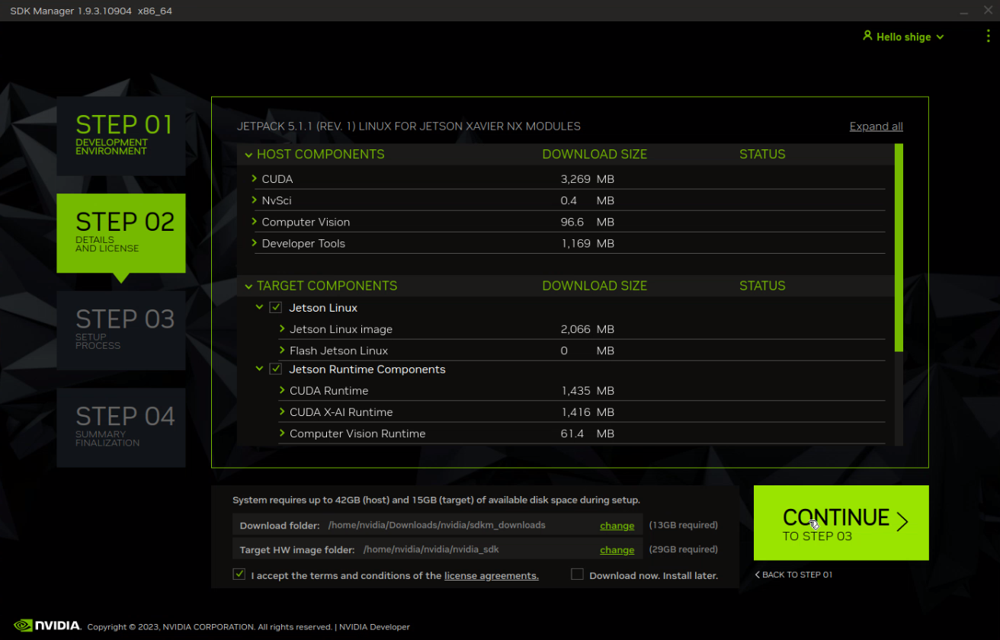
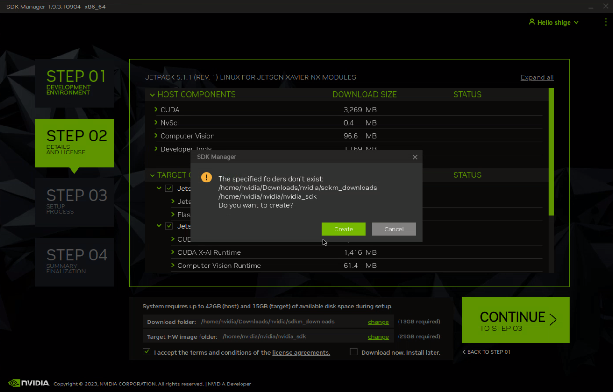
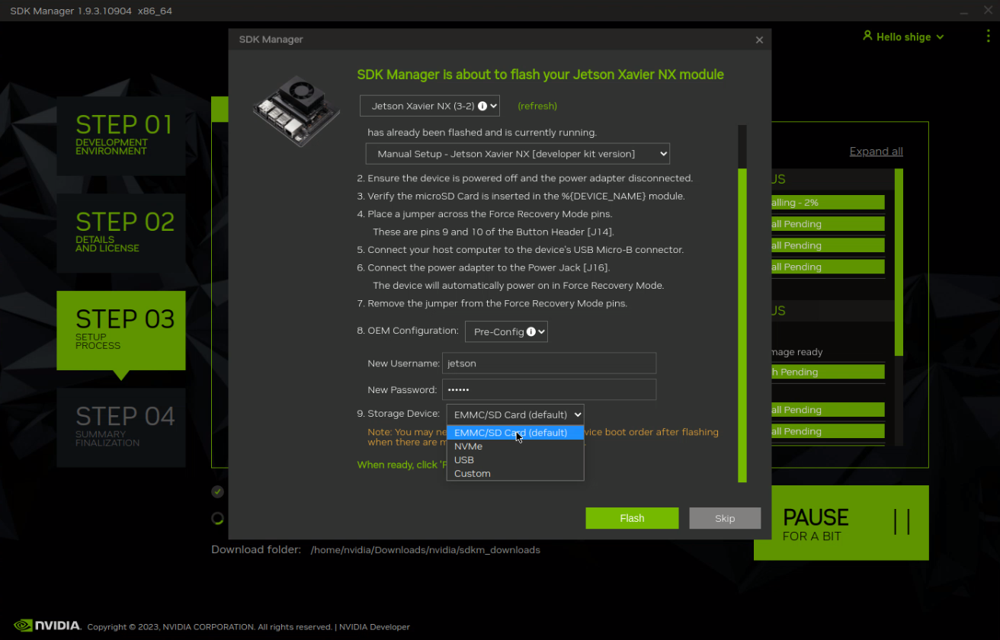
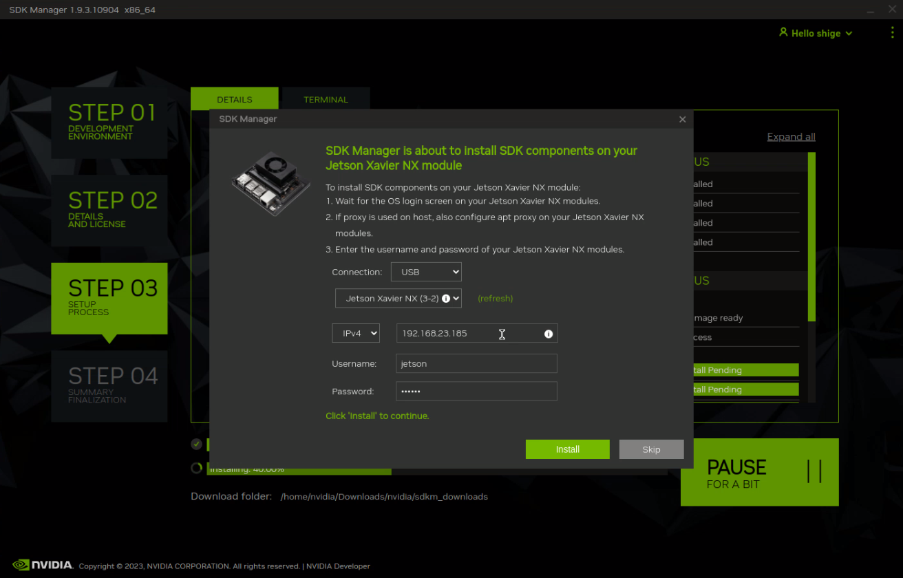
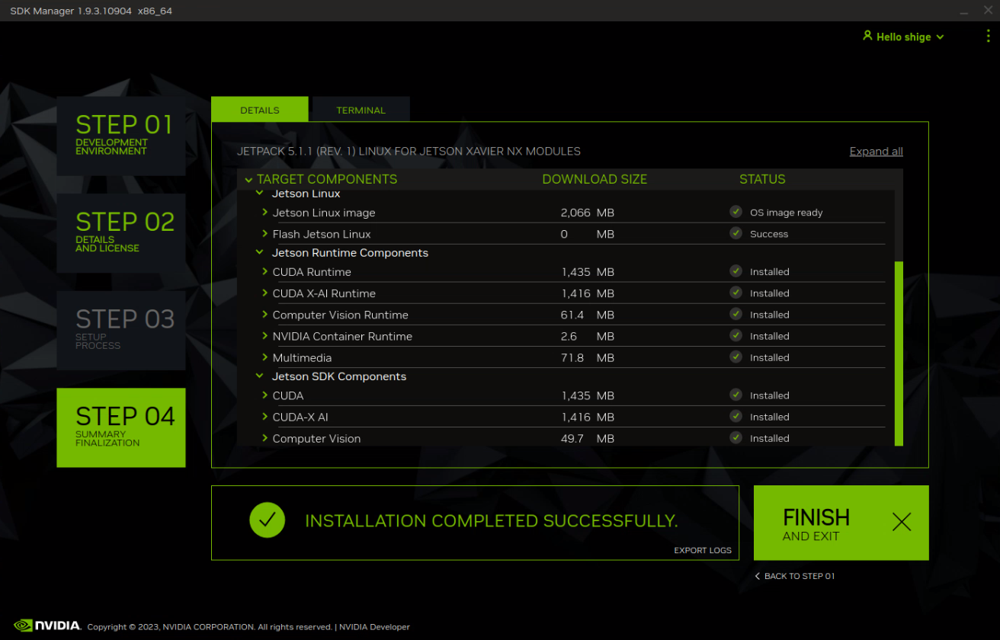

Jetson マニュアル
このマニュアルでは、Jetsonデバイスをセットアップし、クローンするための手順を説明します。
1. NVIDIA SDK ManagerでJetpackのインストール
1.1 NVIDIA SDK Manageとは
NVIDIA Jetsonプラットフォーム、NVIDIA DRIVEプラットフォームの開発環境をセットアップするツール。
1.2 NVIDIA SDK Managerの用意
ここでは、NVIDIA SDK Managerを用意する方法を2つ紹介します。
- nativeのNVIDIA SDK Managerを使用する
- Nvidia-sdkmanager-docker-guiを使用する
NVIDIA SDK Managerをaptでインストールします。
NVIDIA公式サイトより、debファイルをダウンロード
GitHubにて公開されている、以下のパッケージを使用します。詳しいやり方はこのリポジトリのREADME.mdを参照してください。
このリポジトリのclone
$ git clone https://github.com/IkuoShige/Nvidia-sdkmanager-docker-gui.git
$ cd Nvidia-sdkmanager-docker-gui/
ダウンロードするにはNvidiaのアカウントにログインする必要があるため、下記のNvidiaのリンクからログインして直接ダウンロードしてください:
ダウンロードしたファイルからDockerイメージを作成
Dockerイメージを元にコンテナをbuild:
1.3 SDK Managerを用いたJetpackのインストール
NVIDIA SDK Managerの起動






これみて書く or 録画した映像から画像を取得して自分で書くか
2. Jetsonのセットアップ
- JetPackのダウンロードが完了するまで待ちます。
- Jetsonが起動すると、設定したパスワードでログインします。
- WiFiの設定を行います。
- IPアドレスを固定します。
- 有線または無線接続を選択します。
- 設定を完了したらWiFiを再起動します。
- ボード上のジャンパ線を外します。

